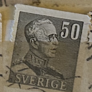
| SOURCE | TITLE| IMAGE MATCH | click to source page |
| eBay | Sweden stamps - King Gustav V (1858-1950) 40 Swedish öre 1940 Sg:SE 241 | eBay | 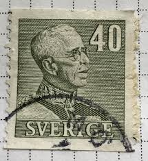 |
| eBay | Darling Little Vintage Swedish "Merry Christmas" Postcard w/ Cute Elf Family * | eBay | 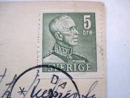 |
| Mercari | ST-394} Stamp~ 1950 Denmark, 60 Ore / 60o, | Mercari | 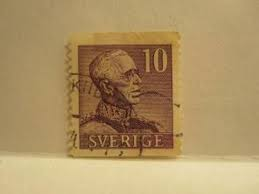 |
| ebid.net | Sverige Sweden 1939 King Gustaf V 10 ore Used Stamp on eBid United States | 190567129 | 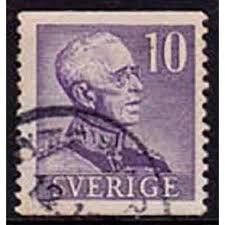 |
| Online Philately | F.271A, 5 öre Gustav V profil höger, typ II ** - Online Philately | 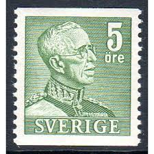 |
| eBay | SWEDEN 307 (Mi262) - King Gustaf V "1940 Perf 12.5 Vertically" (pf2733) | eBay | 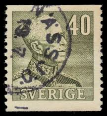 |
| eBay | Little Vintage Swedish Postcard "Happy New Year" w/ Artist "Nerman" * | eBay | 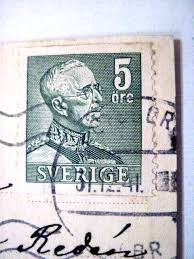 |
| eBay | Sweden 1939-1942 30 ore Rose King Gustaf V Hinged Used (JBX) | eBay | 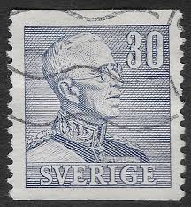 |
| eBay | 1936 Sweden 300 years Swedish Post Sc#252 USED VF Postman | eBay | 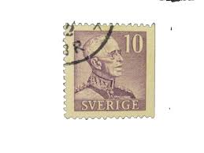 |
| eBay | Sweden, Scott #309 King Gustav V 1941 Issue, MNH | eBay | 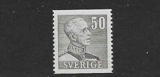 |
| eBay | Little 1947 Swedish Postcard "Merry Christmas/Happy New Year"Artist "Nerman"* | eBay | 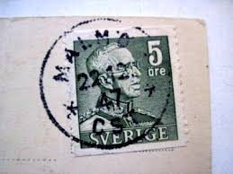 |
| eBay | SWEDEN 1984 TENNIS CANCEL, SWEDISH OPEN FDCSPI-31 | eBay | 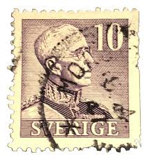 |
| eBay | 1939-48 GUSTAF V Type 2, 5Öre Green Block Of 4 MNH Swedish Stamps | eBay | 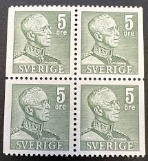 |
| eBay | Sweden stamps - King Gustav V (1858-1950) 15 Swedish öre 1945 Sg:SE 236a | eBay | 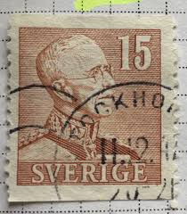 |
| eBay | Sweden Foreign Unchecked Stamp Used - #F369 | eBay |  |
| Todocolección | suecia 2008, serie correo 2653/55 en bloque de - Buy Antique stamps of Sweden on todocoleccion | 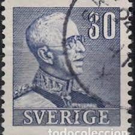 |
| Online Philately | F.282, 45 öre Gustav V, right profile, type II ** - Online Philately | 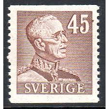 |
| eBay | 1939 GUSTAF V Typ I 20 Öre Red MNH Swedish Stamp Mount Included | eBay | 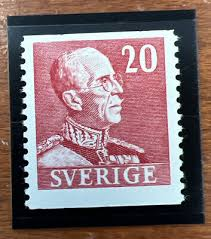 |
| eBay | Sverige Foreign 5 Ore Stamp Used - #A1049 | eBay | 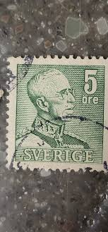 |
| finnserver.com | Sweden King Gustaf V 20 ore red, left [SE Mi 258 Dl] o Used, cancelled | Postage Stamps vmstamps.com | 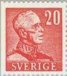 |
| eBay | SWEDEN:1948 SC#392 MNH King Gustaf V | eBay | 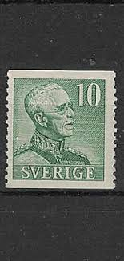 |
| eBay Australia | 1939-1942 Sweden - King Gustaf V - Pair 50 Ore Stamps | eBay Australia | 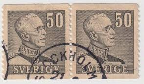 |
| eBay | Sweden Stamp Scott #299b, Used | eBay | 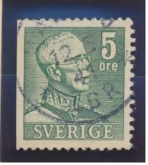 |
| Online Philately | F.271BB, 5 öre Gustav V, right profile, type II [used] - Online Philately | 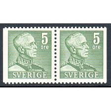 |
| Online Philately | F.272, 5 öre Gustav V, right profile, type II [used] - Online Philately | 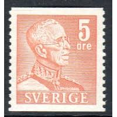 |
| eBay | Sweden #307-309 Mint Hinged (SCV=$3.55) | eBay | 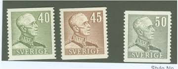 |
| eBay | 1938 SWEDEN King Gustaf V Stamp 5o Mi 250 Sc 275 A54 Used | eBay | 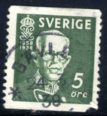 |
| eBay | Swedish Stamps / 1939-42 / King Gustaf V / 2 Blocks / Used | eBay | 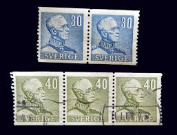 |
| eBay | Sweden Scott 278a Mint NH (Catalog Value $22.50) [TE1778] | eBay | 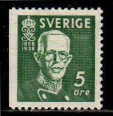 |
| ebid.net | GB, Queen Elizabeth Machin, Ellipse, brown 1993, 5p, #2 on eBid United States | 195769626 | 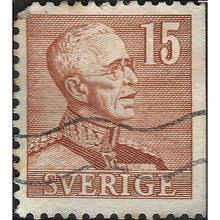 |
| eBay | SWEDEN 1939 Gustav V Type I Small numerals Facit 269 CB / Michel 256 I B/Dr MNH. | eBay | 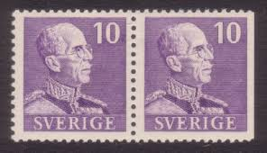 |
| finnserver.com | Sweden 1940 - 1949 | King Gustaf V 10 ore green, pair [SE Mi 333 Dl+Dr] o Used, cancelled | Postage Stamps vmstamps.com | 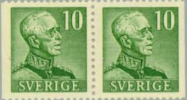 |
| eBay | SWEDEN: USED King Gustaf V Stamps m449 | eBay | 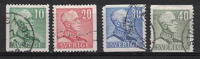 |
| eBay | SWEDEN 1939 256I B/D ** MNH FLAWLESS mixed perforation pairs 300€(I3796 | eBay | 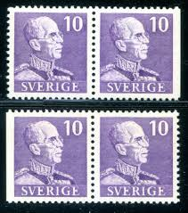 |
| eBay | SWEDEN - FACIT 192b MINT NEVER HINGED OG ** NO FAULTS VERY FINE! - BBR | eBay | 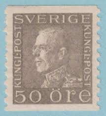 |
| eBay | Sweden Stamp Scott #650, Used | eBay | 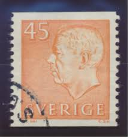 |
| eBay | SWEDEN COVER 16/12/48 NOCKEBY - MARCUS HOOK, Pa,USA; GOOD CANCELS, NO RECEIVED. | eBay | 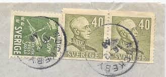 |
| eBay | Sweden #294, #299, #300, #304, #310 used lot | eBay | 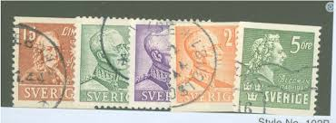 |
| eBay | U8607 SWEDEN 1938 King Gustav V three sides perforation 15 öre brown MH | eBay | 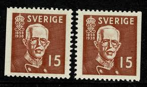 |
| eBay | Sweden Stamp 1939 46 Scott 299 A60 Green Gustav V Set of 6 | eBay | 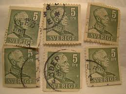 |
| eBay | Sweden #175 mint hinged a22.7 5411 | eBay | 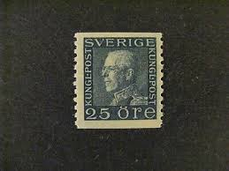 |
| eBay | 1928 GUSTAF V 70 ÅR MNH Swedish Green Stamp Mount Included | eBay | 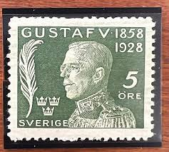 |
| eBay | SWEDEN 1928 Gustav 5 ore - fresh MNH........................................V878 | eBay | 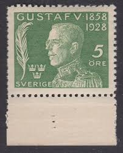 |
| eBay | Sweden, Postage Stamp, #B32-B33 Used, 1928 King Gustaf V (AC) | eBay | 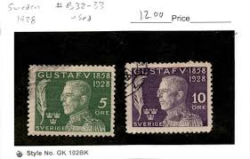 |
| eBay | 1961-71 GUSTAF VI A, Typ III Swedish Booklet With 8 Green Stamps 50 öre | eBay | 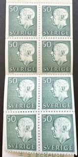 |
| eBay | Sweden 1969 nobel prize booklet MNH** | eBay | 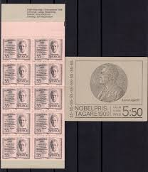 |
| ebid.net | Sverige Sweden 1952 King Gustaf VI Adolf 20 ore Used Stamp. on eBid United Kingdom | 190566618 | 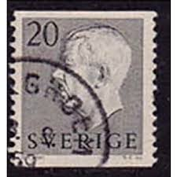 |
| eBay | Sweden 1974 nobel prize MNH | eBay | 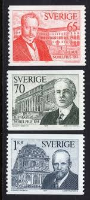 |
| eBay | Swedish Stamps / 1939-42 / King Gustaf V / 8 stamps Used | eBay | 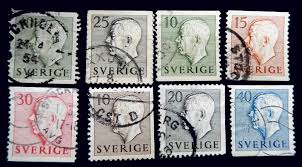 |
| eBay | Sweden #267, 385 pair (2 stamps), 405, 583 used | eBay | 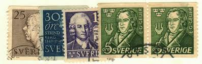 |
| eBay | 1942-44 King Christian 10 Danmark Postage Stamp | eBay | |
| eBay | 1940 C. M. Bellman Swedish Stamp Including Mount | eBay | |
| eBay | Sweden Lot Stamps | eBay | |
| eBay | Sweden 1966, Centenary of the Birth of Nathan Söderblom set MNH, Mi 544-45 | eBay | |
| eBay | VERY RARE SWEDEN 15 Ore King Gustav V Stamp 1921 Sverige | eBay | |
| eBay | Sweden, Postage Stamp, #427-429 Mint Hinged, 1951 Christopher Polhem (AB) | eBay | |
| eBay | 1961-71 GUSTAF VI A, Typ III Swedish Booklet With 10 Blue green Stamps 65 öre | eBay | |
| eBay | Sverige Foreign 15 Ore Stamp Used - #A854 | eBay | |
| eBay | Sweden, Postage Stamp, #683-685 Used, 1965 Prince Eugen (AB) | eBay |